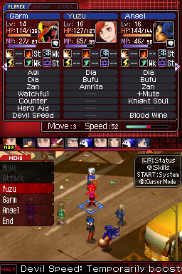
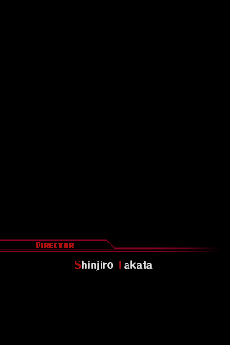
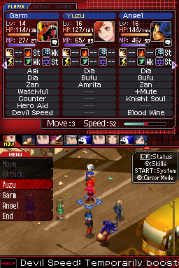
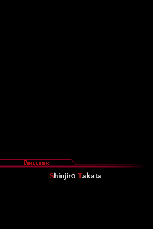

Shin Megami Tensei: Devil Survivor

Complete on 2022-07-20
3 / 5
Release Date: Jun 23, 2009
Meta Score: 84
Screenshots
 



Notes
So the randomizer is definitely messing with me as punishment for dropping Strange Journey. However, despite the shared supertitle, Devil Survivor is quite a different game. Shared elements are the demon designs, some themes and elements like demon fusing.
SMT:DS is an SRPG. Move around, attack enemies, complete objectives in battles (often killing all enemies, but reasonably often with other elements like protecting NPCs in the mix). Between battles you can do party management, buying new demons and fusing them, and get a bunch of story scenes between story battles. The game is half a visual novel really.
You don't have to negotiate with demons to recruit them, my least favourite SMT mechanic. Instead there's an auction for new demons accessible between battles. It's not the greatest system ever but it does the job without infuriating me like demon negotiation.
You're offered a lot of dialogue choices in the visual novel section as well as choices of who to talk to. It's not very clear what impact you're having with these, if any. It seems that your choices unlock different endings but that only shows up on the final day. I think the story up until then is fairly set really...
There's a weird balance issue with magic. There are only 2 "tiers" of magic spells, with the second one appearing quite late in the game. It starts off quite strong, but then gets weaker over time compared to physical attacks, but then when the second tier starts appearing it spikes up in power again.
The battle difficulty can be a bit all over the place. Usually fights are hard because of the victory/defeat conditions, like needing to save NPCs or prevent enemies escaping. It was pretty rare to lose in a straight up fight. Often this makes the demon powers that affect tactical map movement disproportionately valuable.
Overall, decent game but I did end up kind of wanting to get it over with. Somewhat not helped by coming straight after another SMT.